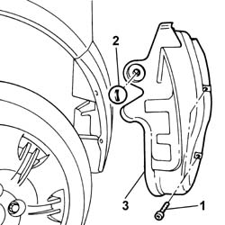
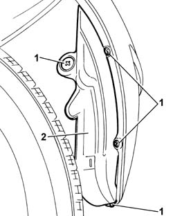
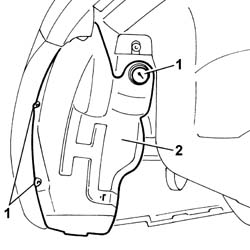
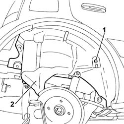

7055B48 REAR WHEEL ARCH LINER (ONE), LEFT OR RIGHT - R.R.
- Path
- Procedures > 70 FITTINGS > 7055 MOULDINGS ON PROTECTIONS > 7055B EXTERIOR PROTECTIONS > 7055B48 REAR WHEEL ARCH LINER (ONE), LEFT OR RIGHT - R.R.
- Kind
- repair procedure (removal / refitting; the operation number is the code)
- Applies to
- all engines; all production periods
- Interactive page
- https://sloeber94.github.io/elrnDB-fPnd/en/#/2753308
Applies to: engines: 1.1, 1.3 JTD 16v; all production periods
 Removing
Removing
 Refitting
RefittingPosition the vehicle on a lift.
1. Undo the retaining bolts.
2. Loosen the cap.
3. Remove the rear wheel arch liner.

Applies to: engines: 1.1, 1.3 JTD 16v; all production periods
Refitting
RemovingPlace the rear wheel arch liner in position.
Tighten the fixing bolts.
Tighten the cap.
Remove the vehicle from the lift.
Applies to: engines: 1.2 8v; all production periods
Removing
RefittingPosition the vehicle on a lift.
Raise the vehicle.
1. Undo the retaining bolts.
2. Remove the wheel arch liner.

Applies to: engines: 1.2 8v; all production periods
Refitting
RemovingFit the wheel arch liner in place and tighten the fixing bolts.
Applies to: engines: 1.2 8v; all production periods; only with equipment: 4x4
Removing
RefittingPosition the vehicle on a lift.
Raise the vehicle.
Op. 4450B08 RIGHT REAR WHEEL R R
[Left or right]
1. Undo the retaining bolts.
2. Remove the rear wheel arch liner.

Applies to: engines: 1.2 8v; all production periods; only with equipment: 4x4
1. Undo the retaining bolts.
2. Remove the rear wheel arch liner.

Applies to: engines: 1.2 8v; all production periods; only with equipment: 4x4
Refitting
RemovingFit the wheel arch liner in place and tighten the fixing bolts.
Fit the wheel arch liner in place and tighten the fixing bolts.
Op. 4450B08 RIGHT REAR WHEEL R R
[Left or right]